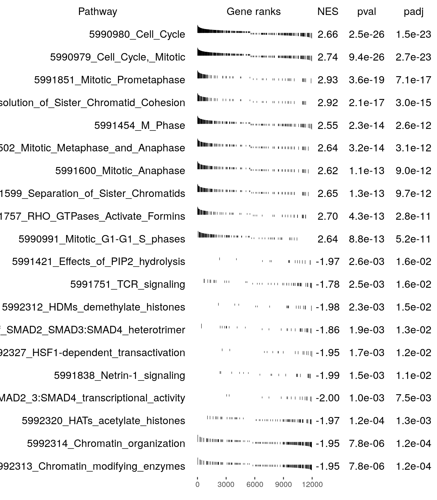
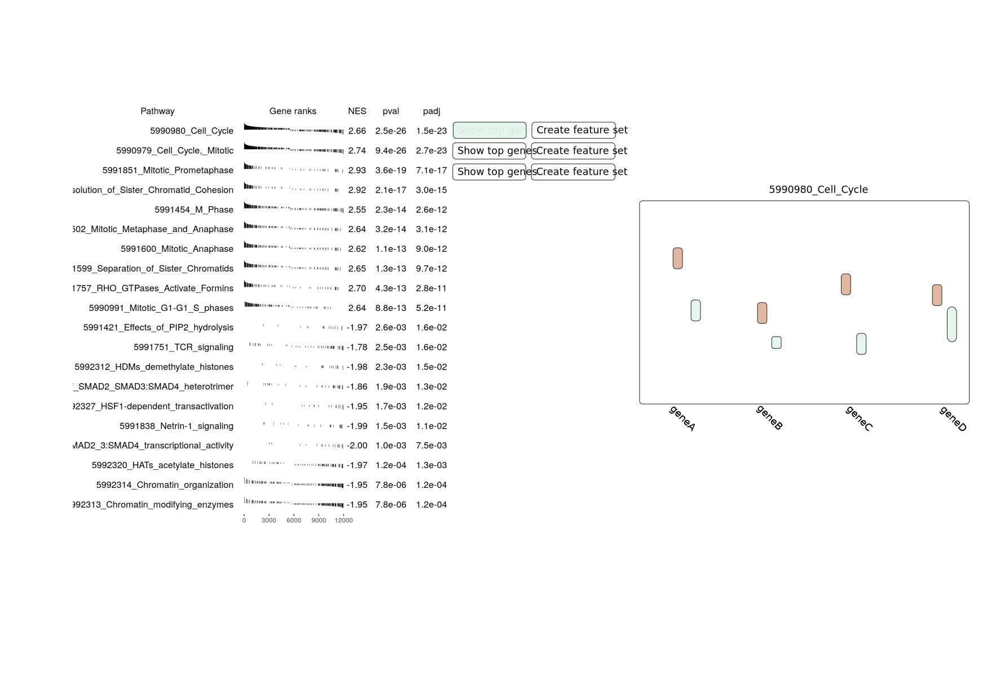
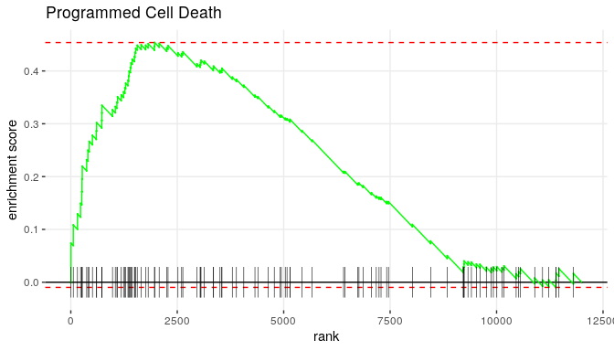

A primer on GSEA + viz
For GSEA, we imagine two analyses. One handles the overview, finding biological pathways of interest given a set of differential expression results. The other gives a more detailed view of an individual pathway.
High-level overview of GSEA
We are using the "fast" gene set enrichment analysis (fgsea) in the R language. This is effectively a copy of the original GSEA with some algorithmic tweaks to make it run much faster. https://www.biorxiv.org/content/10.1101/060012v2.full.pdf
The input to a fgsea analysis is the results of a differential gene expression analysis (e.g. DESeq2, etc.). We use those differential expression results to make a ranked list of the genes. Typically, this ranking would be based on something like
$$r_i = -\log(p_i)\cdot\mathrm{sgn}(logFC_i)$$
for gene $i$ where $p_i$ is the p-value from the test and $logFC_i$ is the log fold-change; $\mathrm{sgn}$ is the "sign" function. This way, we can rank the genes so that the most differentially expressed are at the extremes (top or bottom) of the list.
GSEA also needs a list of "gene sets", which can be things like a set of genes involved in some biological process (i.e. cell death, etc). The idea is that if many genes in those pathways are differentially expressed, we have reason to believe that pathway would be disrupted or changed in some interesting way.
Part 1
For this overview analysis, we have to provide the results from a differential expression analysis, such as DESeq2.
GSEA will produce a table giving the top pathways, like the following: 
The "rug plots" (in the Gene ranks column) here show where that pathway's genes lie inside the ranked list of ~12,000 genes. The height of the lines is equal to the ranking statistics (the $-\log(p)\cdot \mathrm{sgn}(lfc)$), normalized by the maximum absolute value. We look for denser lines at the left and right side which indicate likely up and down-regulated pathways.
The output could be a JSON file with the following structure (unless something else makes more sense):
[
{
"name":"5990980_Cell_Cycle",
"NES": 2.66,
"pval":2.5e-26,
"padj": 1.5e-23,
"gene_ranks": {
"x":[3,7,...,11202],
"y":[1.0, 0.93,...,-0.97]
}
},
...
]As for the UI

Outputs of Part 2
For a single pathway, the "classic" GSEA figure looks like:

The green line is based on their "enrichment score" (ES), which is kind of a running sum as it goes through the ranked list of all genes. Each time it sees a gene that is in the pathway, it adds to that sum; otherwise, it subtracts. Since many of this pathway's genes are at the top of the ranked list, the green line ascends quickly. The genes to the left of the "peak" are called the "leading edge" genes and is given as an output in the analysis. Therefore, we can easily give users a list of genes in their pathway that are the "most important". This calculation is technically performed as part of the more general analysis above, but the package does not provide a direct way to access the results and get the points for the green line. It's also likely too much data to return for the general analysis where we only want to provide an overview.
In the figure above, the lines at the bottom show the location of the pathway genes in the ranked list, just as in the table above.
Some "nice to have"s:
If we displayed the table shown above, it would be great if we could use that to create a FeatureSet. For example, the user could click on a button that says "create new gene set". This would be just like how we can create an ObservationSet by highlighting samples in the PCA plot.
Since the GSEA results originate from a specific differential expression analysis, we can use that file to create the plots in the same way we do when we plot after the basic diff. exp. analysis.